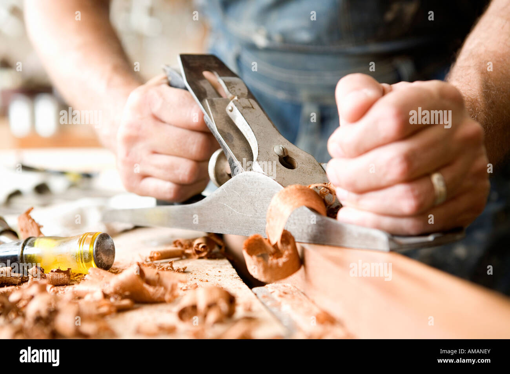

For marking with the help of marking gauge, it must be firmly held with fingers around the head and with the thumb behind the marking point and the gauge must be pushed forward against the surface. While pushing, the gauge should be kept slightly forward so that, the point gets dragged at the slight angle
Hold the handle of the plane with the right hand and the knob with the left hand. Place the straight edge cross-wise on the stock and move it slowly form one end to the other. Then place the edge lengthwise and move it slowly form one edge to the other.Finally place the straight edge on the one diagonal and then on the other.
Hold the blade of the chisel between the thumb and first two fingers of the left hand and guide it while pushing with the right hand. Instead of cutting across the entire width, cut the mid way from one edge and then from the other to avoid splitting. Begin on the front edge and push forward at an angle. Straighten the handle to vertical, towards the end of the stroke. Guide the chisel with the left hand, while applying force with the right.